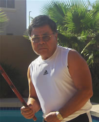
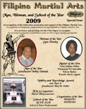

|
Sam Buot, Sr., was born in Cebu City on March 24, 1936, eldest son of Alfredo and Susana Lagrito-Buot. He grew up in the rough neighborhood of Katipunan Street in the Labangon District of Cebu City. He learned the rudiments of eskrima from Teddy Buot, who lived next door. Sam left home at the tender age of twelve to study at Silliman University in Dumaguete, Negros Oriental, from high school through law school. Eskrima was limited to the summer vacations. Except for some neighborhood boxing, with smelly gloves and old-fashioned bare-knuckle brawls, serious studies of the arts did not occur until after college. Besides education, the university polished his dull edges with some culture. However, the enduring Darwin’s theory of the "survival of the fittest and elimination of the unfit," never totally left him. After college, he found himself heir to his father’s struggling real estate business. He built up his business to an extraordinary success. He developed subdivisions, acquired real estate and had the most successful brokerage firm in Cebu City at that time period.
After college, he resumed his eskrima studies, although business and his law practice competed for his time. During martial law in the Philippines in 1972, owning firearms was a capital offense, punishable by death. The only legitimate way to defend one-self was through martial arts. This intensified Sam’s interest in the martial arts, most especially eskrima. Self-defense became an urgent matter. He was smitten by the sophistication, finesse and elegance of the art, especially since it was indigenous to the Philippines. In the age of colonial mentality, nothing home grown was deemed good, only foreign made goods and imported ideas were believed worthy. It dawned on Buot that the Philippines had something original and native, which was comparable and arguably even better than many concepts of self-defense. As a staunch nationalist, he wanted to promote the Filipino art. This time he could afford to hire the best instructors. He proceeded to hire all talents in eskrima and other martial arts – including Anciong Bacon. He worked out during and after office hours until near curfew hours at midnight and more intensively and extensively on weekends. This went on until Martial Law triggered his departure for the United States. Eskrima obsessed him. It was a way to escape his frustration with the oppressive and dispiriting Martial Law regime of the conjugal dictators Ferdinand and Imelda Marcos.
This book is an expansion of his notes on eskrima started when the author, under the tutelage of Jose Villasin. The author had his own black and white dark room and took pictures with Villasin to capture the subtleties of the moves. It was an attempt to record and organize the voluminous material dished out every day in workouts. Immigration to the US aborted the effort but the idea never left the author. Serendipitously, with the collapse of the real estate industry in the late 1980’s, the author found time to regroup, focus and intensify his efforts in finishing the book. Publication fell again into dormancy with the constant addition of notes. With constant demand from Internet readers of his site, he played with the idea of placing them on CD’s in harmony with more modern technology.
Other than this study, at the original time of this writing, there were no credible efforts by original students of the masters to reduce the Balintawak style of eskrima into writing. This work was originally copyrighted in 1991, and recent surfing of the Internet has shown that portions of this book have been flagrantly quoted and/or reproduced without the author’s permission. Balintawak is now very much in the Internet. There has been a proliferation of “Balintawak eskrimadors”. Thanks for the interest of many martial artists in Balintawak eskrima. Balintawak continues to grow worldwide. In a larger picture, despite apparent club rivalries, all promoters of eskrima should be applauded. After all, it still is an infant in the martial arts world.
 Buot has adapted the more open, progressive and tolerant attitude towards innovation and the growth of eskrima - although he is vigorous in the defense of the integrity of eskrima as a Philippine art. He does not however believe in rigid and narrow-minded inbreeding. Inbreeding is discouraged in the propagation of the species, thus the forbiddance of incest. It is discouraged at schools of higher learning. Otherwise, there is no infusion of new knowledge and ideas. It is seldom that the student can excel beyond his teacher if he is not innovative and original in his thoughts, unless he is willing to learn beyond what he has learned or even to question what he has learned. As much as unadulterated eskrima is much desired, it cannot be denied that a majority of our students have had their basic martial arts experience at and from other arts. Many of them are martial arts instructors and school owners. It is thus necessary to know the defenses against the strengths of these other arts and to take advantage, power and control over their weaknesses. Sam believes that although eskrima does not have all the answers, it does provide a lot of the answers and defenses to these other arts. When Buot’s students learn eskrima, he encourages them to apply their knowledge in either offense to or defense against eskrima. He encourages them to apply their own art in attacking or defending against eskrima. He also believes that for every counter, there is a corresponding counter. Only practice and mastery of your art is the key to reflexive counters and confidence. Buot has researched and innovated techniques but refuses to take credit - always crediting his teachers for his knowledge.
Thanks to an indulgent and understanding wife, Menchie, who may have wondered about the time spent on this book and the free lessons given to pass on and preserve the art. The whole family may have wondered whether this has been childish pursuit and juvenile fun or whether this is true passion and devotion to an art.
BIODATA: Aside from his interest in eskrima Sam has distinguished himself in other fields.
FMAdigest 2009
Grandmaster Sam Buot
Nobility and Knowledge Award

Download |
He has been:
- Past National President, Philippine Association of Realtors Boards and as such has organized Realtors Boards nationwide; drafted the Domestic Trade Order No. 1, Series of 1975 (The law licensing real estate brokers and salesmen in the Philippines); submitted national policies creating the National Housing Authority and submitted policies and proposals to the National Association of Registers of Deeds that have been adapted.
- Member, Philippine Bar Associate & Integrated Bar of the Philippines
- Three-term President, Cebu Realtors Board
- Institute of Philippine Real Estate Consultants, Member
- Institute of Philippine Real Estate Appraisers, Member
- Outstanding Alumnus Award - bestowed during its Diamond Jubilee in 1976 by Silliman University, from where he graduated his High School, Bachelor of Arts and Bachelor of Laws
- Charter Member, Metro Cebu Rotary Club
- Lt. Governor, Philippine Kiwanis
- Founder and Charter President of the Cebu Kiwanis Foundation
- Realwealth Investment Corporation and Realwealth Investment Co., President, Owner and Broker (Engaged in acquisition, development, appraisal, syndication of real estate and commercial, industrial and residential brokerage and syndications of real estate both in Philippines and the USA.)
- Golden Life Achievement Award by the World Head of Family Sokeship Council, a worldwide martial arts organization. |